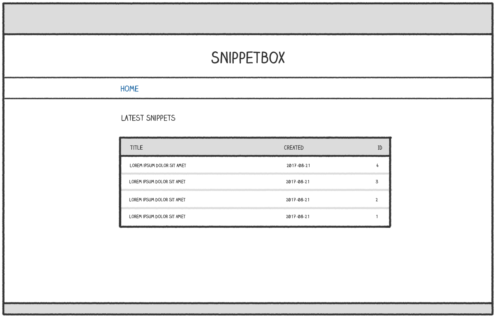
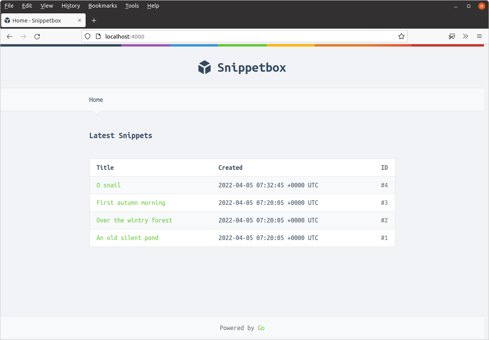

عملکردها و توابع قالب (Template Actions and Functions)
در این بخش، به بررسی برخی از عملکردهای قالب (Template Actions) و توابع داخلی (Built-in Functions) که در بسته html/template Go در دسترس هستند میپردازیم.
این ابزارها به شما امکان میدهند تا منطق قالب (Template Logic) را پیادهسازی کنید و دادههای پویا (Dynamic Data) را به روشهای مختلف نمایش دهید.
ما قبلاً در مورد برخی از اقدامات صحبت کرده ایم — {{define}}, {{template}} و {{block}} — اما سه مورد دیگر وجود دارد که می توانید برای کنترل نمایش داده های پویا استفاده کنید — {{if}}, {{with}} و {{range}}.
| توضیحات اقدام | اقدام |
|---|---|
اگر .Foo خالی نباشد، محتوای C1 را رندر کنید، در غیر این صورت محتوای C2 را رندر کنید. |
{{if .Foo}} C1 {{else}} C2 {{end}} |
اگر .Foo خالی نباشد، نقطه را به مقدار .Foo تنظیم کنید و محتوای C1 را رندر کنید، در غیر این صورت محتوای C2 را رندر کنید. |
{{with .Foo}} C1 {{else}} C2 {{end}} |
اگر طول .Foo بیشتر از صفر باشد، بر روی هر عنصر حلقه بزنید، نقطه را به مقدار هر عنصر تنظیم کنید و محتوای C1 را رندر کنید. اگر طول .Foo صفر باشد، محتوای C2 را رندر کنید. نوع زیرین .Foo باید یک آرایه، برش، نقشه یا کانال باشد. |
{{range .Foo}} C1 {{else}} C2 {{end}} |
چند نکته در مورد این اقدامات وجود دارد:
برای هر سه اقدام، بند
{{else}}اختیاری است. به عنوان مثال، می توانید{{if .Foo}} C1 {{end}}بنویسید اگر محتوایC2وجود ندارد که بخواهید رندر کنید.مقادیر خالی شامل false، 0، هر اشاره گر یا مقدار رابط nil و هر آرایه، برش، نقشه یا رشته با طول صفر است.
مهم است که درک کنید که اقدامات
withوrangeمقدار نقطه را تغییر می دهند. هنگامی که شروع به استفاده از آنها می کنید، آنچه نقطه نشان می دهد می تواند بسته به جایی که در قالب هستید و کاری که انجام می دهید متفاوت باشد.
بسته html/template همچنین برخی از توابع قالب را ارائه می دهد که می توانید برای افزودن منطق اضافی به قالب های خود و کنترل آنچه در زمان اجرا رندر می شود، استفاده کنید. می توانید لیست کامل توابع را اینجا پیدا کنید، اما مهمترین آنها عبارتند از:
| توضیحات تابع | تابع |
|---|---|
اگر .Foo برابر با .Bar باشد، true را برمی گرداند |
{{eq .Foo .Bar}} |
اگر .Foo برابر با .Bar نباشد، true را برمی گرداند |
{{ne .Foo .Bar}} |
نفی منطقی .Foo را برمی گرداند |
{{not .Foo}} |
اگر .Foo خالی نباشد، .Foo را برمی گرداند؛ در غیر این صورت .Bar را برمی گرداند |
{{or .Foo .Bar}} |
مقدار .Foo در شاخص i را برمی گرداند. نوع زیرین .Foo باید یک نقشه، برش یا آرایه باشد و i باید یک مقدار عدد صحیح باشد. |
{{index .Foo i}} |
یک رشته قالب بندی شده حاوی مقادیر .Foo و .Bar را برمی گرداند. به همان روشی که fmt.Sprintf() کار می کند. |
{{printf "%s-%s" .Foo .Bar}} |
طول .Foo را به عنوان یک عدد صحیح برمی گرداند. |
{{len .Foo}} |
طول .Foo را به متغیر قالب $bar اختصاص می دهد |
{{$bar := len .Foo}} |
ردیف نهایی نمونه ای از اعلام یک متغیر قالب است. متغیرهای قالب به ویژه مفید هستند اگر بخواهید نتیجه یک تابع را ذخیره کنید و در چندین مکان در قالب خود از آن استفاده کنید. نام متغیرها باید با علامت دلار پیشوند شوند و فقط می توانند حاوی کاراکترهای الفبایی باشند.
استفاده از اقدام with
یک فرصت خوب برای استفاده از اقدام {{with}} فایل view.tmpl است که در فصل قبلی ایجاد کردیم. ادامه دهید و آن را به این صورت به روز کنید:
{{define "title"}}Snippet #{{.Snippet.ID}}{{end}}
{{define "main"}}
{{with .Snippet}}
<div class='snippet'>
<div class='metadata'>
<strong>{{.Title}}</strong>
<span>#{{.ID}}</span>
</div>
<pre><code>{{.Content}}</code></pre>
<div class='metadata'>
<time>Created: {{.Created}}</time>
<time>Expires: {{.Expires}}</time>
</div>
</div>
{{end}}
{{end}}
بنابراین اکنون، بین {{with .Snippet}} و تگ {{end}} مربوطه، مقدار نقطه به .Snippet تنظیم می شود. نقطه اساساً به ساختار models.Snippet تبدیل می شود به جای ساختار والد templateData.
استفاده از اقدامات if و range
بیایید همچنین از اقدامات {{if}} و {{range}} در یک مثال عملی استفاده کنیم و صفحه اصلی خود را به روز کنیم تا جدولی از آخرین قطعات را نمایش دهد، چیزی شبیه به این:

ابتدا ساختار templateData را به روز کنید تا شامل یک فیلد Snippets برای نگهداری یک برش از قطعات باشد، به این صورت:
package main import "snippetbox.letsgofa.net/internal/models" // Include a Snippets field in the templateData struct. type templateData struct { Snippet models.Snippet Snippets []models.Snippet }
سپس تابع home handler را به روز کنید تا آخرین قطعات را از مدل پایگاه داده ما بگیرد و آنها را به قالب home.tmpl منتقل کند:
package main ... func (app *application) home(w http.ResponseWriter, r *http.Request) { w.Header().Add("Server", "Go") snippets, err := app.snippets.Latest() if err != nil { app.serverError(w, r, err) return } files := []string{ "./ui/html/base.tmpl", "./ui/html/partials/nav.tmpl", "./ui/html/pages/home.tmpl", } ts, err := template.ParseFiles(files...) if err != nil { app.serverError(w, r, err) return } // Create an instance of a templateData struct holding the slice of // snippets. data := templateData{ Snippets: snippets, } // Pass in the templateData struct when executing the template. err = ts.ExecuteTemplate(w, "base", data) if err != nil { app.serverError(w, r, err) } } ...
حالا بیایید به فایل ui/html/pages/home.tmpl برویم و آن را به روز کنیم تا این قطعات را در یک جدول با استفاده از اقدامات {{if}} و {{range}} نمایش دهیم. به طور خاص:
ما می خواهیم از اقدام
{{if}}استفاده کنیم تا بررسی کنیم که آیا برش قطعات خالی است یا خیر. اگر خالی است، می خواهیم یک پیام"هنوز چیزی برای دیدن اینجا نیست!نمایش دهیم. در غیر این صورت، می خواهیم جدولی حاوی اطلاعات قطعه را رندر کنیم.ما می خواهیم از اقدام
{{range}}استفاده کنیم تا بر روی تمام قطعات در برش حلقه بزنیم و محتوای هر قطعه را در یک سطر جدول رندر کنیم.
در اینجا نشانه گذاری آمده است:
{{define "title"}}Home{{end}}
{{define "main"}}
<h2>Latest Snippets</h2>
{{if .Snippets}}
<table>
<tr>
<th>Title</th>
<th>Created</th>
<th>ID</th>
</tr>
{{range .Snippets}}
<tr>
<td><a href='/snippet/view/{{.ID}}'>{{.Title}}</a></td>
<td>{{.Created}}</td>
<td>#{{.ID}}</td>
</tr>
{{end}}
</table>
{{else}}
<p>هنوز چیزی برای دیدن اینجا نیست...!</p>
{{end}}
{{end}}
اطمینان حاصل کنید که همه فایل های شما ذخیره شده اند، برنامه را مجدداً راه اندازی کنید و به http://localhost:4000 در یک مرورگر وب مراجعه کنید. اگر همه چیز طبق برنامه پیش رفته باشد، باید صفحه ای را ببینید که شبیه به این است:

اطلاعات اضافی
ترکیب توابع
امکان ترکیب چندین تابع در برچسب های قالب شما وجود دارد، با استفاده از پرانتز () برای احاطه کردن توابع و آرگومان های آنها در صورت لزوم.
به عنوان مثال، برچسب زیر محتوای C1 را رندر می کند اگر طول Foo بیشتر از 99 باشد:
{{if (gt (len .Foo) 99)}} C1 {{end}}
یا به عنوان مثال دیگر، برچسب زیر محتوای C1 را رندر می کند اگر .Foo برابر با 1 باشد و .Bar کمتر یا برابر با 20 باشد:
{{if (and (eq .Foo 1) (le .Bar 20))}} C1 {{end}}
کنترل رفتار حلقه
در یک اقدام {{range}} می توانید از دستور {{break}} برای پایان دادن به حلقه زودهنگام استفاده کنید و {{continue}} برای بلافاصله شروع تکرار بعدی حلقه.
{{range .Foo}} // Skip this iteration if the .ID value equals 99. {{if eq .ID 99}} {{continue}} {{end}} // ... {{end}}
{{range .Foo}} // End the loop if the .ID value equals 99. {{if eq .ID 99}} {{break}} {{end}} // ... {{end}}
واژهنامه اصطلاحات فنی (Technical Glossary)
| اصطلاح فارسی | معادل انگلیسی | توضیح |
|---|---|---|
| عملکردهای قالب | Template Actions | دستورات خاص برای کنترل جریان و پردازش داده در قالبها |
| توابع داخلی | Built-in Functions | توابع از پیش تعریف شده در بسته html/template |
| منطق قالب | Template Logic | قواعد و شرایط برای پردازش و نمایش دادهها در قالب |
| دادههای پویا | Dynamic Data | اطلاعاتی که در زمان اجرا تغییر میکنند |
| حلقههای تکرار | Iteration Loops | ساختارهای تکرار برای پردازش مجموعهای از دادهها |
| عبارات شرطی | Conditional Statements | دستورات برای اجرای کد بر اساس شرایط خاص |
| قالببندی متن | Text Formatting | تغییر شکل و ظاهر متن برای نمایش |
| متغیرهای قالب | Template Variables | متغیرهای موقت برای ذخیره داده در قالب |
| فراخوانی تابع | Function Call | استفاده از یک تابع برای انجام عملیات خاص |
| پردازش رشته | String Processing | عملیات مختلف روی متنها و رشتهها |